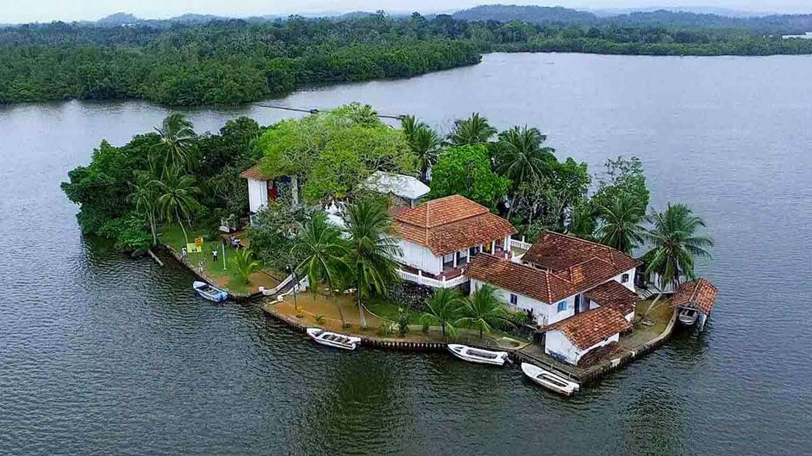
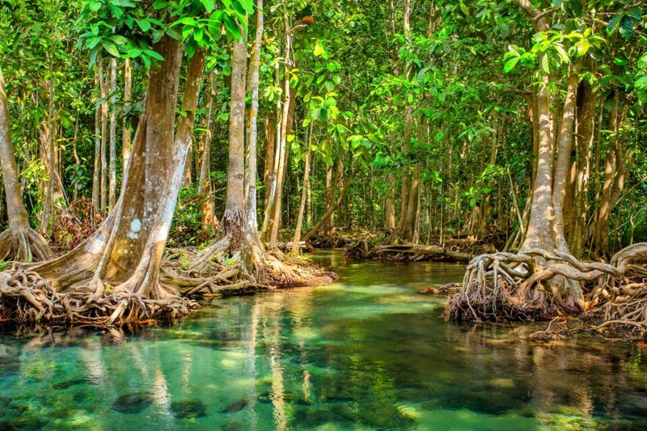

The Madu River Boat Safari, located near Balapitiya on Sri Lanka’s southwest coast, offers a peaceful and immersive journey through mangrove forests, islands, and diverse wildlife. It is one of the country’s most popular eco-tourism experiences.
Madu Ganga Wetland Sanctuary
Madu Ganga is a protected wetland ecosystem recognized for its biodiversity. The river network consists of narrow waterways, mangrove tunnels, and over 60 small islands scattered throughout the lagoon.
Mangrove Forests
The dense mangrove forests act as natural nurseries for fish and crustaceans. As your boat glides through shaded canals, you may spot water monitors, kingfishers, herons, and other wetland birds.
Cinnamon Island
One of the highlights of the safari is a visit to Cinnamon Island, where traditional methods of peeling and processing cinnamon are demonstrated by local villagers.

Fish Therapy & Island Temples
Visitors often stop at small island temples and experience natural fish therapy, where tiny fish gently exfoliate the skin — a unique and relaxing part of the journey.